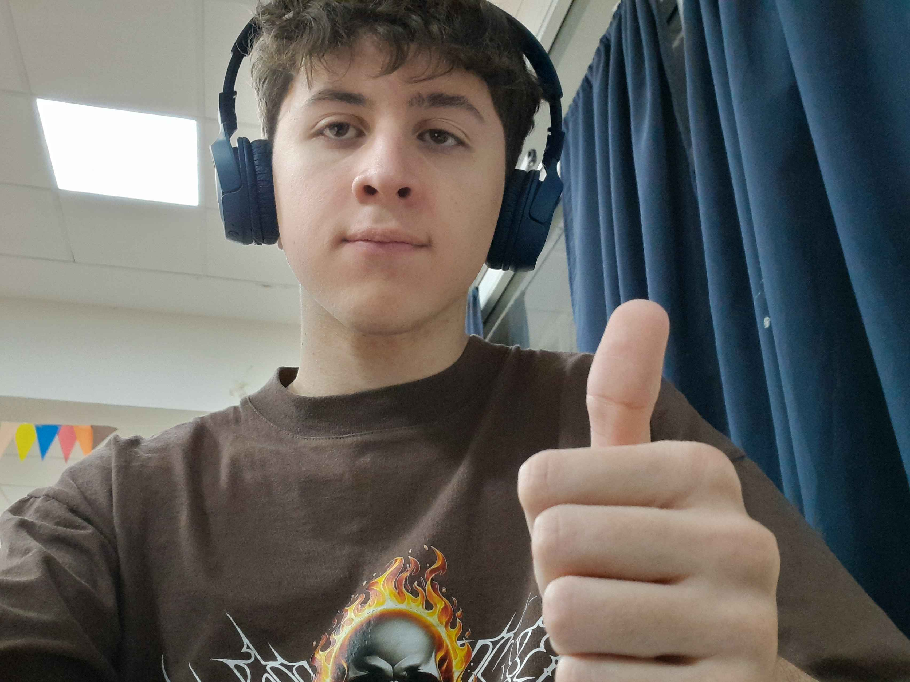
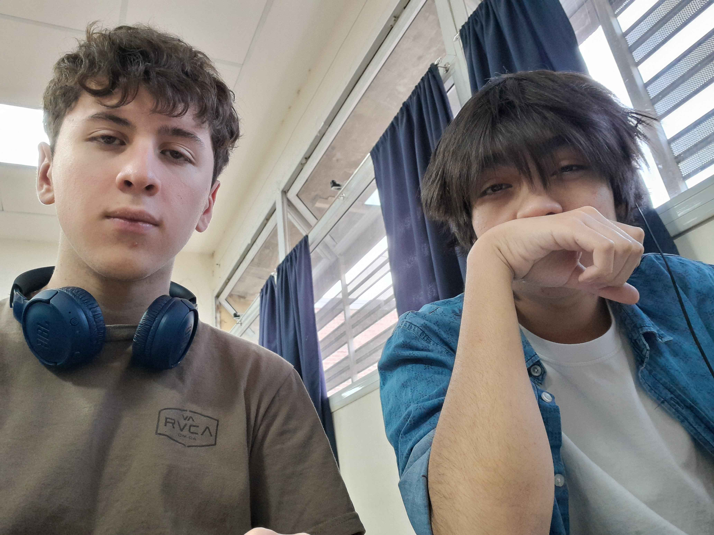
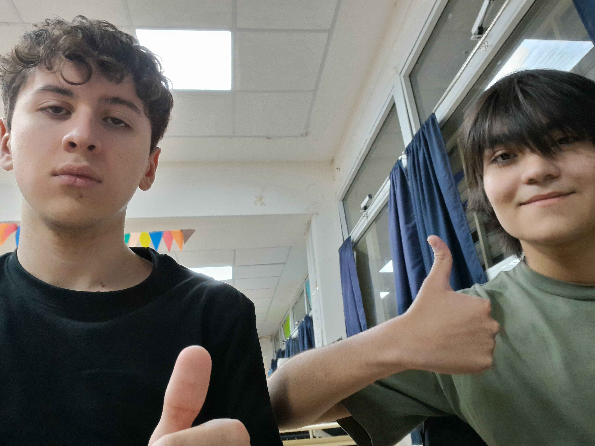
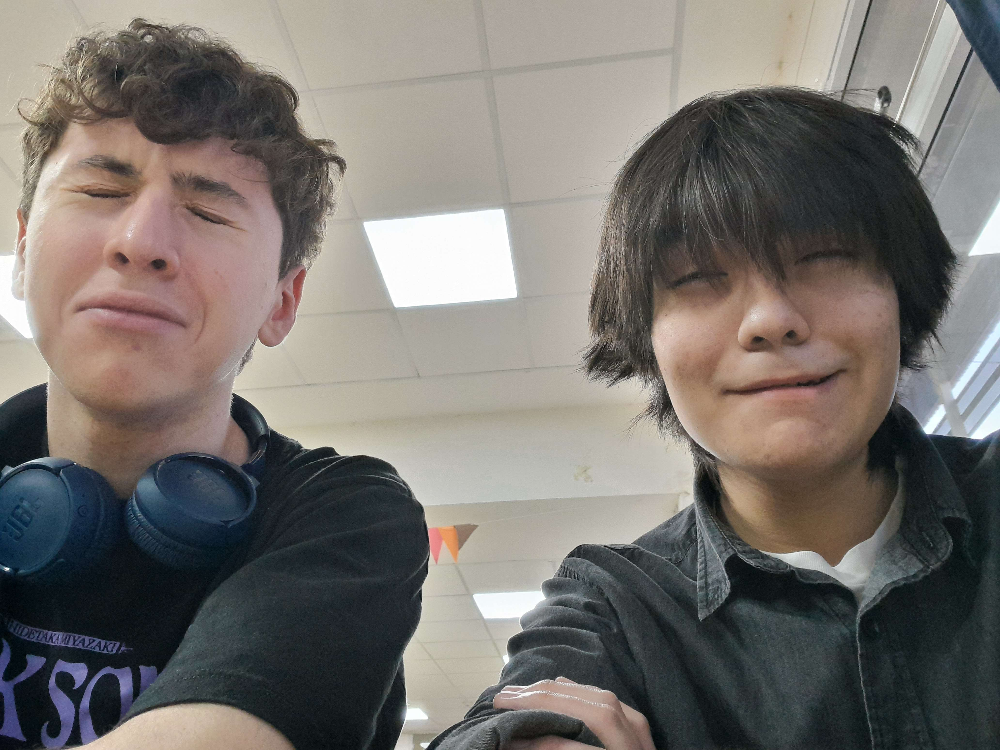
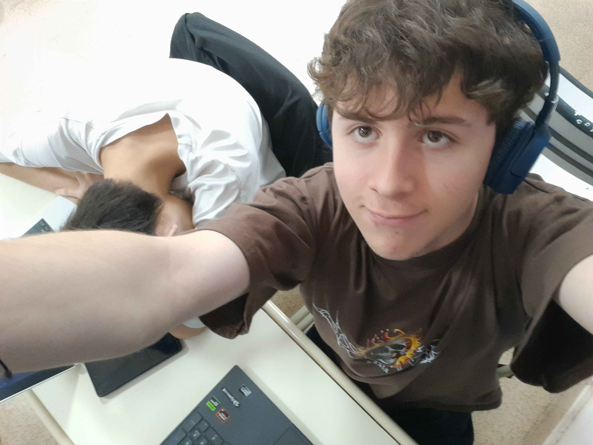
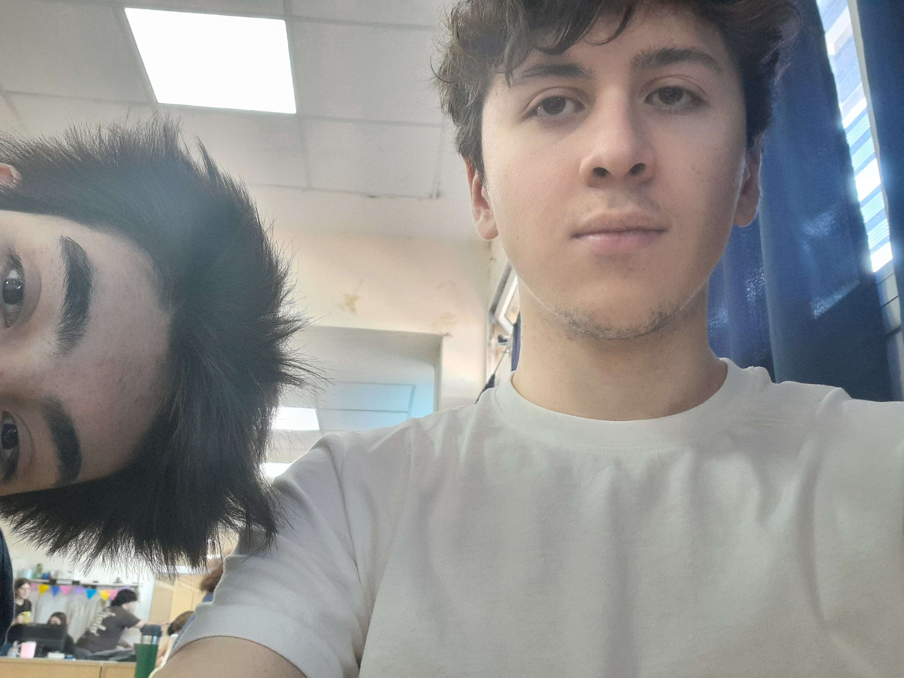

.png)
Esta seccion recopilará el proceso resumido del desarrollo de la página web (En clases).
Dia 1
En este día se nos asignó la tarea de realizar el proyecto y después de mucho pensar (5 minutos) decidimos hacer la página con la temática elegida, Spider-Man, por lo que nos pusimos a realizar el informe.

Dia 1 (5 segundos después)
Joaquin quiso asesinar brutalmente a Gaspar, desafortunadamente no lo consiguió.
Dia 2
Joaquin contrajo una enfermedad altamente peligrosa (gripe) y tuvo que dejar a Gaspar por su cuenta, asi que este ultimo realizó la plantilla de las páginas HTML y la pagina de Inicio.
Dia 3
Se agregó la página de contacto, plantilla para las páginas de las peliculas y se comenzó a trabajar en CSS
Dia 4
Se comenzaron a agregar páginas de peliculas.
Dia 5
Para este punto se pulió el CSS para llegar a algo similar al final, y se añadió el carrusel de imagenes,así también como comics y series.

Dia 6
Se agregaron más comics, y series. (y se nos cayó el celu)
Dia 7
Se habia terminado un carrito funcional con javascript, y más adelante en la semana se agregó un validador de Javascript. (Y Joaquín se cortó el pelo D:)
Dia 8
Entrega del proyecto!!!!!!!!!!!!!!!!!!!!!!!!!! :DDDDDDDDDDDDDDDDDDDDDDDDDDDDDDD